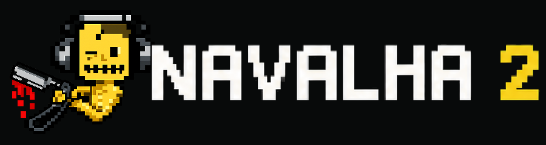

Two raw materials
Independent sources feed one shared grammar of cutting and recombination. They are material, not decks.
A performance instrument for recorded matter

Navalha 2 turns two sound sources into playable fragments, patterns, gestures and form. It is not a dual deck and not a conventional sampler: the cut itself becomes an instrument.
Source → slice → pattern → gesture → form
Navalha began as a Pure Data instrument by Glerm Soares. Navalha 2 preserves that lineage while expanding it into a two-source, gesture-driven performance environment directed by Lúcio Araújo. The native JUCE/C++ migration keeps the v0.28.1 PD/web instrument as its functional reference until human acceptance is complete.
Independent sources feed one shared grammar of cutting and recombination. They are material, not decks.
Regions, divisions, BLADE and undo reshape access to the source while leaving the original recording intact.
TRACE records a movement across BPM and pitch. FORM arranges broader states without flattening live intervention.
Patterns, virtual voices and assisted decisions remain reversible and subordinate to PLAY, STOP and REC.
Glerm Soares creates the Pure Data instrument and its characteristic slicing/sequencing workflow.
The interface grows around non-destructive source editing, patterns, gesture, recording and master workflows.
The PD/web version remains the explicit baseline for migration and parity decisions.
JUCE/C++ v0.1.0 establishes the realtime core, native interface, portable projects and output-safety foundation.
One instrument, four workspaces
A first performance in eight moves
Open AUDIO SETUP, choose the output device, sample rate and buffer. Begin with OUTPUT TRIM attenuated.
Drop WAV material into SOURCE A and B. Use Preview for auditioning without replacing either source.
Select a useful span in the waveform, divide it, then refine with BLADE. Editing remains non-destructive.
Place A, B or GAP events in the step grid. Choose GRID, FREE or JITTER as the timing behavior.
Use STUTTER, BURST, MICRO and REVERSE; record an XY TRACE or arrange broader FORM scenes.
Enable only the Assisted Performer vocabularies you want. Its edits remain bounded and reversible.
PLAY starts the instrument; STOP invalidates pending gestures. MASTER CREATIVE and OUTPUT TRIM serve distinct roles.
Choose PCM16, PCM24 or float32, press REC, then review the finalized WAV in TAKE Timeline.
The native app also includes a ten-chapter tutorial and contextual LEARN panel in EN/PT/FR/ES.
A native shell, not a picture of the web app
The final screenshot set is still being prepared. This structural map documents the current native organization without presenting an obsolete build as final.
Native DSP with explicit boundaries
The application is built in C++20 with JUCE 8. Its realtime path avoids allocation and locks in the audio callback. The current Linux build is verified; Windows and macOS remain planned validation targets.
Automated evidence: core contracts, golden render, stress, recording soak, project codecs, headless guard and independent FFmpeg true-peak cross-check — 10/10 tests passing on GNU/Linux.
Published as work in progress, measured without inflation
Glerm Soares — author, developer and creator of the original Navalha Pure Data instrument.
Lúcio Araújo — conception and direction of Navalha 2 upgrades, musician-facing workflow, interface decisions, testing and musical evaluation.
OpenAI / ChatGPT — implementation assistance, migration tooling, documentation and test preparation under Lúcio Araújo’s direction.
Navalha 2 source code: GPL-3.0-or-later. JUCE 8 is obtained separately under AGPL-3.0-only or a commercial JUCE license. See the license status before distributing binaries.